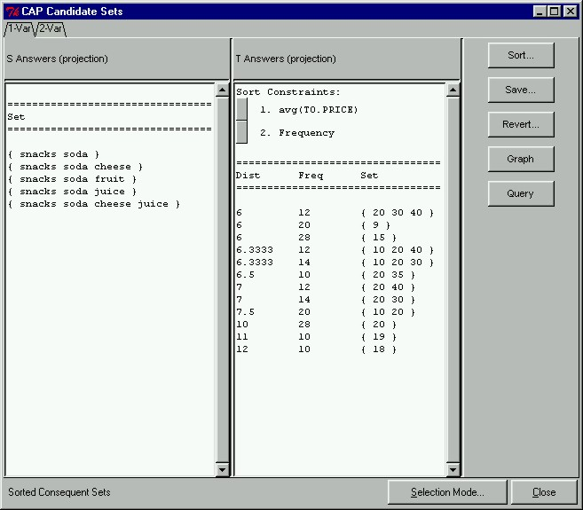

 |
Sorted Frequent SetsIn our prototype, the results of the sorting are also displayed textually. Now we can see the actual values of the sort. For example, the average price of items in the set {20 30 40} is $6 and the support of the set is 12%.
|